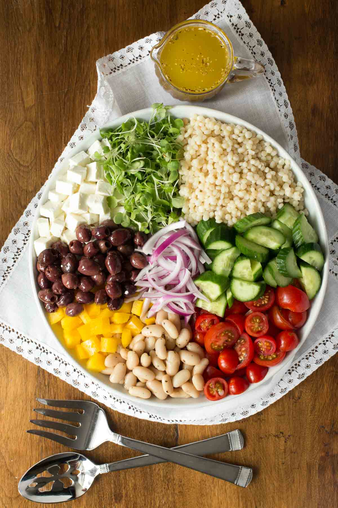

Greek Couscous Salad

Description
This is a recipe of the classic greek salad with a twist. The twist is filling and tasty couscous!
Ingredients
Dressing:
- 1 tablespoon white wine vinegar
- 1 ½ lemon juice
- 1 teaspoon dried oregano
- ½ teaspoon of ground black pepper
Salad:
- ½ cup of water
- ¼ cup chicken broth
- 1 teaspoon minced garlic
- ½ cup pearl (Israeli) couscous
- 1 cup canned chickpeas (garbanzo beans), rinsed and drained
- ¼ cup chopped sun-dried tomatoes
- ¼ cup sliced Kalamata olives
- 2 tablespoons crumbled feta cheese
Steps
- Pour water and chicken broth into a saucepan; stir in the garlic and bring to a boil. Stir in pearl couscous, cover the pan, and remove from heat. Allow couscous to stand until water has been absorbed, about 5 minutes; fluff with a fork. Allow couscous to cool to warm temperature.
- Lightly toss couscous, chickpeas, sun-dried tomatoes, olives, and feta cheese in a large serving bowl.
- To make the dressing: Mix white wine vinegar, lemon juice, oregano, and black pepper in a small bowl until well combined. Pour over couscous mixture; toss again to serve.